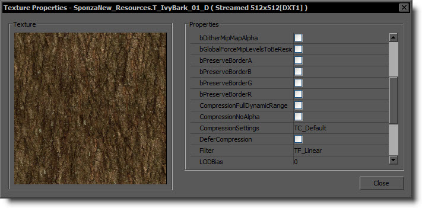
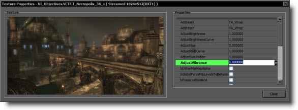

UDN
Search public documentation:
TexturePropertiesJP
English Translation
中国翻译
한국어
Interested in the Unreal Engine?
Visit the Unreal Technology site.
Looking for jobs and company info?
Check out the Epic games site.
Questions about support via UDN?
Contact the UDN Staff
中国翻译
한국어
Interested in the Unreal Engine?
Visit the Unreal Technology site.
Looking for jobs and company info?
Check out the Epic games site.
Questions about support via UDN?
Contact the UDN Staff
テクスチャのプロパティ
ドキュメントの概要：様々なテクスチャのプロパティの意味を解説。 ドキュメントの変更ログ： Daniel Wright により作成。 Mike Fricker により更新。概要
テクスチャプロパティ ウィンドウは、通常は コンテンツ ブラウザ でテクスチャアセットをダブルクリックすると呼び出されます。このウィンドウでは、テクスチャのプレビューとプロパティの編集ができます。色の調整の適用や、圧縮や LOD 設定の変更もここで行うことができます。テクスチャのプレビュー ウィンドウのサイズを変更するには、ウィンドウの右下の角をクリックしてドラッグします。
設定
色の調整に関する設定
以下のプロパティを使うと、元のアートに手を加えずにテクスチャの色を調整することができます。これらの変更は圧縮時に適用されます。 これらの設定は、テクスチャ間で簡単に渡すことができます。テクスチャを右クリックして [Copy Texture Adjustments to Clipboard] (テクスチャの調整をクリップボードにコピー) を選択し、次に貼り付け先となるテクスチャを 1 つまたは複数選択し、右クリックして [Paste Texture Adjustments] (テクスチャの調整を貼り付け) を選択します。選択したすべてのテクスチャに設定内容が送られます。場合によってはテクスチャの再圧縮が必要なので、この操作に時間がかかることもあります。
これらの設定は、テクスチャ間で簡単に渡すことができます。テクスチャを右クリックして [Copy Texture Adjustments to Clipboard] (テクスチャの調整をクリップボードにコピー) を選択し、次に貼り付け先となるテクスチャを 1 つまたは複数選択し、右クリックして [Paste Texture Adjustments] (テクスチャの調整を貼り付け) を選択します。選択したすべてのテクスチャに設定内容が送られます。場合によってはテクスチャの再圧縮が必要なので、この操作に時間がかかることもあります。

AdjustBrightness
指定した値を HSV の Value 成分に乗算し、テクスチャの明るさをスケーリングします。値が 1.0 より大きい場合は画像の明るさが増し、1.0 未満の場合は明るさが減少します。任意の数を入力できますが、最終的な V 値は 0.0 から 1.0 までの間の値 (ピクセルあたり) に強制されます。この設定のデフォルト値は 1.0 です。 上の画像は、 AdjustBrightness を 5.0 に設定して変化を出しています。
上の画像は、 AdjustBrightness を 5.0 に設定して変化を出しています。
AdjustBrightnessCurve
カーブを使ってテクスチャの明るさを調整します。各ピクセルの HSV Value 成分を指定された指数でべき乗し、べき乗関数によって定義されたカーブを用いて、画像の明るさの非線形スケーリングを行います。値が 1.0 未満の場合は画像の明るさが増し、1.0 より大きい場合は明るさが減少します。任意の数を入力できますが、最終的な V 値は 0.0 から 1.0 までの間の値 (ピクセルあたり) に強制されます。この設定のデフォルト値は 1.0 です。 上の画像は、 AdjustBrightnessCurve を 0.5 に設定して変化を出しています。
上の画像は、 AdjustBrightnessCurve を 0.5 に設定して変化を出しています。
AdjustHue
カラーサークルで HSV の Hue 成分を指定角度量 (0.0 - 360.0) 移動し、画像の色相 (Hue) を変更します。角度値が非常に小さい場合は画像の色にかすかに陰影が付く程度ですが、値が大きい場合は色も完全に変化することがあります。0.0 から 360.0 の範囲外の数値を使用すると、「一巡 (wrap)」して範囲内の値に収まります。この設定のデフォルト値は 0.0 です。 上の画像は、 AdjustHue を 180.0 に設定して変化を出しています。
上の画像は、 AdjustHue を 180.0 に設定して変化を出しています。
AdjustRGBCurve
カーブを使ってテクスチャの明るさを調整します。各ピクセルの線形空間の RGB 値を指定された指数でべき乗し、べき乗関数によって定義されたカーブを用いて、画像の明るさの非線形スケーリングを行います。値が 1.0 未満の場合は画像の明るさが増し、1.0 より大きい場合は明るさが減少します。任意の数を入力できますが、最終的に 0.0 から 1.0 までの間の値 (ピクセルあたり) に強制されます。この設定のデフォルト値は 1.0 です。 上の画像は、 AdjustRGBCurve を 0.5 に設定して変化を出しています。
上の画像は、 AdjustRGBCurve を 0.5 に設定して変化を出しています。
AdjustSaturation
指定した値を HSV の Saturation 成分に乗算し、テクスチャの色の彩度 (saturation) をスケーリングします。値が 1.0 より大きい場合は彩度が増し、1.0 未満の場合は減少します。値がゼロの場合は、完全にグレースケールの画像になります。任意の数を入力できますが、最終的な S 値は 0.0 から 1.0 までの間の値 (ピクセルあたり) に強制されます。この設定のデフォルト値は 1.0 です。 上の画像は、 AdjustSaturation を 5.0 に設定して変化を出しています。
上の画像は、 AdjustSaturation を 5.0 に設定して変化を出しています。
AdjustVibrance
0.0 から 1.0 までの範囲の数値を指定してテクスチャの彩度を調整します。これは、自然な状態で彩度の低い色の彩度を上げる、というカスタムアルゴリズムを採用しています。彩度の低いテクスチャ部分を、既に彩度の高い (濃い色の) ピクセルに一致させたい場合に役に立ちます。この設定のデフォルト値は 0.0 です。
上の画像は、 AdjustVibrance を 1.0 に設定して変化を出しています。